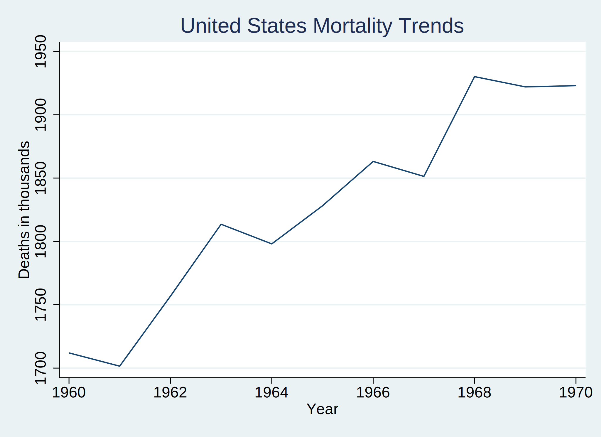

Patrick Donahue, MS
Johns Hopkins Bloomberg School of Public Health
Background: Stata is a useful statistical software package that can perform many types of analyses. However, Stata is lacking in the ability to push content to the internet when compared to other programs, such as R or Python. Additionally, the National Health and Nutrition Examination Survey (NHANES) is one of the largest population-based samples in the United States that collects a variety of health outcomes. However, many Stata users may find it difficult to access NHANES files because of incompatible formats. Therefore, as an initial proof of concept, we have designed a Stata program that can easily access mortality data from 1959-2017 that could be linked with NHANES data.
Methods: Using Jupyter software, we created a book to demonstrate 1) How to openly publish while using Stata and 2) How our Stata program works to import mortality data from NHANES. The code for our Stata program, called “nhanesmort” is provided in the last chapter of this book.
Results: The program will import mortality data from the national Bureau of Economic Research for any specified range between the years of 1959 and 2017. For instance, the user may enter 1960 and 1970 and the program will import mortality data from each of the years between 1960 and 1970. Then, the program will construct a line graph to show the trends in mortality over the user-specified time frame.
. nhanesmort, yearstart(1960) yearend(1970)
.

Conclusions: We hope that this project will encourage Stata and its users to promote open science, where code and new programs are shared on platforms such as Github. Additionally, we hope that the “nhanesmort” program will serve as a preliminary example of how flexible Stata programs can increase access to publicly available datasets, such as NHANES.